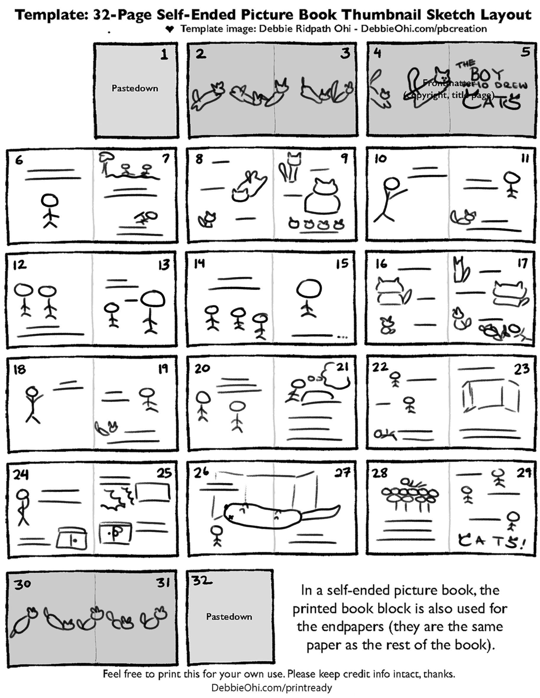

the boy who drew cats
children's book

the project
This is a 40-page children's picture book adaptation of the traditional Japanese folktale, "The Boy Who Drew Cats." While there are many versions of this folktale, the book tells the most common version.
I went through quite a few revisions, particularly on the pages where the boy draws cats, as I felt that while it should be similar for children to recognize the pattern, the pages still had to be distinct enough from each other in order to make it more interesting. Furthermore, I heavily the composition towards the end of the book, as the flow of the story was not quite right. While the book was originally 32 pages long, I combined a couple pages and added 8 pages to allow the story to flow better.
synopsis
Unlike his siblings, Joji was no good at farmwork, and he only loved to draw cats. Turned away from place to place, he wanders and, of course, draws cats. Little did he know that his love of drawing cats would bring him success!
toolkit
Tools Used: Procreate
thumbnails
clean boards
final product
This project is still in progress, but this is a sample colored page.
+ back to projects +